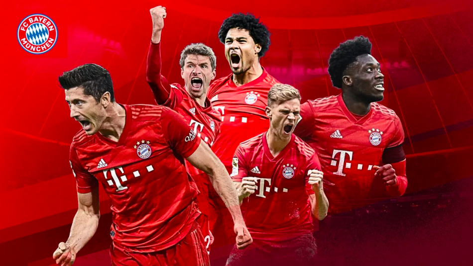
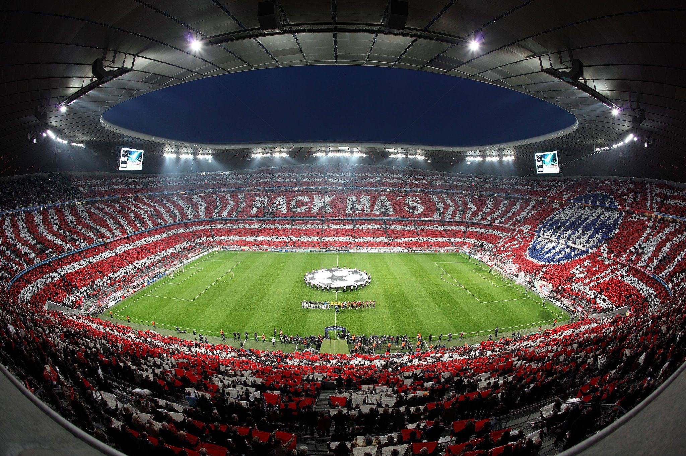

El estadio Allianz Arena del FC Bayern München, en Múnich, ha sido seleccionado como sede para albergar la final de la UEFA Champions League de 2022/23. La capital de Baviera ya albergó las finales de 1993, 1997 y 2012 con gran éxito organizativo y de participación. El Comité Ejecutivo de la UEFA comunicó que la ciudad de Múnich, específicamente el estadio del FC Bayern München, el flamante Allianz Arena, será el escenario que albergará la final de la UEFA Champions League 2022/23. Frente a esta gran noticia, Karl-Heinz Rummenigge, director general del cuadro bávaro, afirmó: "Estamos muy contentos de poder organizar la final de la UEFA Champions League en nuestro Allianz Arena. En nombre del Bayern, me gustaría agradecer a la UEFA y a su presidente Aleksander Čeferin por su confianza". Además, el directivo tuvo palabras de agradecimiento hacia la ciudad de Múnich y en particular al alcalde Dieter Reiter por su trascendental cooperación en la candidatura. "Estoy convencido de que la ciudad de Múnich y el Bayern organizarán conjuntamente un festival de fútbol en el que nos presentaremos al mundo de una manera profesional y moderna", finalizó el comunicado del conjunto alemán.
"La final 'Dahoam' 2012 fue un gran festival de fútbol en nuestra ciudad amante de los deportes. Estaríamos muy contentos si, nueve años después, Múnich volviera a ser la sede de la final de la Liga de Campeones y de darle la bienvenida a los aficionados del fútbol europeo". Con estas palabras anunció el alcalde de Múnich, Dieter Reiter, la candidatura de la capitál bávara para la organización de la finalísima. Se trata de la cuarta final que acogería la capital de Baviera después de las ediciones de 1993, 1997 y 2012. La final de la Champions League es uno de los eventos deportivos más grandes y con más repercusión del mundo. Es seguida por un promedio de 160 millones de televidentes. Además, este evento trae a un gran contingente de público, incluso si no todos los visitantes están en posesión de entradas. Por ejemplo, el Departamento de Trabajo y Economía determinó que alrededor de 179.000 aficionados al fútbol siguieron la final de 2012, ya sea en vivo en el estadio o en lugares de visionado público. El gasto total de todos los visitantes ascendió a alrededor de 47,6 millones de euros en la ciudad, sin contar los gastos de entradas, merchandising y ventas en el estadio y en las áreas de visionado públicas. En promedio, se gastaron unos 420 euros en pernoctaciones por estancia y alrededor de 50 euros al día como visitante.
Ya está claro también que en Múnich, tanto en 2021 como en 2024, se celebrarán partidos de la Eurocopa: En 2021 la UEFA organizó el torneo en diversas sedes europeas y Múnich fue la representante de Alemania. Además, en 2024 la Eurocopa tendrá lugar en Alemania. De esta manera, el Allianz Arena, el estadio donde el FC Bayern München disputa sus partidos como local, albergará su cuarta edición de la final de la mayor competición europea de clubes.